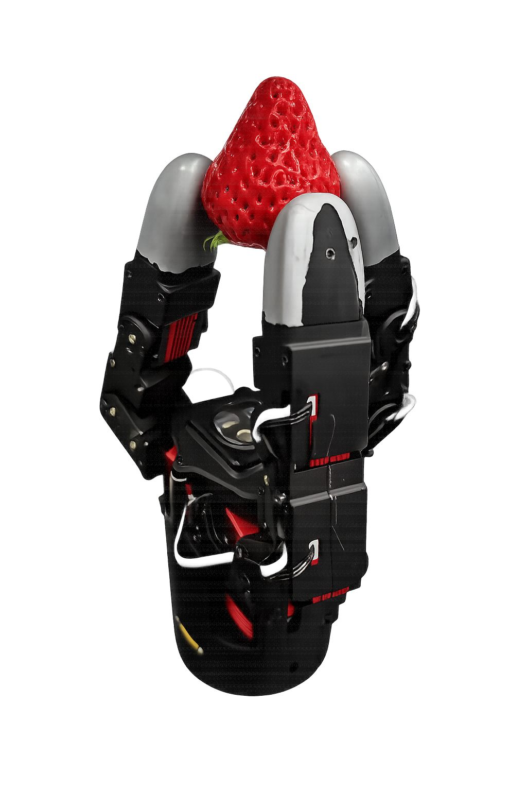
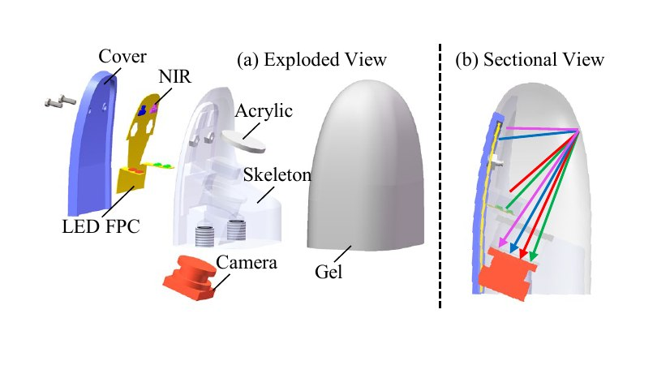

Complete gripper
STEP source · 10.94 MB
A direct-drive three-finger robotic gripper for contact-rich object interaction. Each finger uses four motors for four degrees of freedom, giving the platform twelve degrees of freedom in total.
Role: vision-tactile sensor adaptation, fabrication, end-effector integration, and system-level manipulation testing.


Open hardware
Interactive GLB files are provided for browser preview. Use the STEP source files for manufacturing, inspection, and design modification.
STEP source · 10.94 MB
STEP source · 2.35 MB
Licensed under CERN-OHL-S-2.0. Contributors: Xiaofan Lu, Yuankai Lin, and Jiahui Chen.
State Key Laboratory of Intelligent Manufacturing Equipment and Technology (智能制造装备与技术全国重点实验室).
Read the CAD license